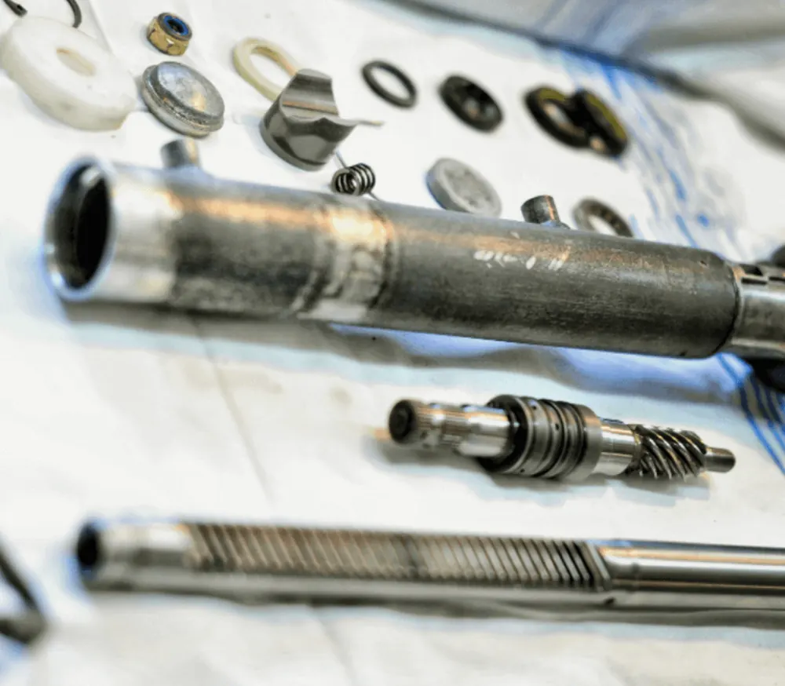
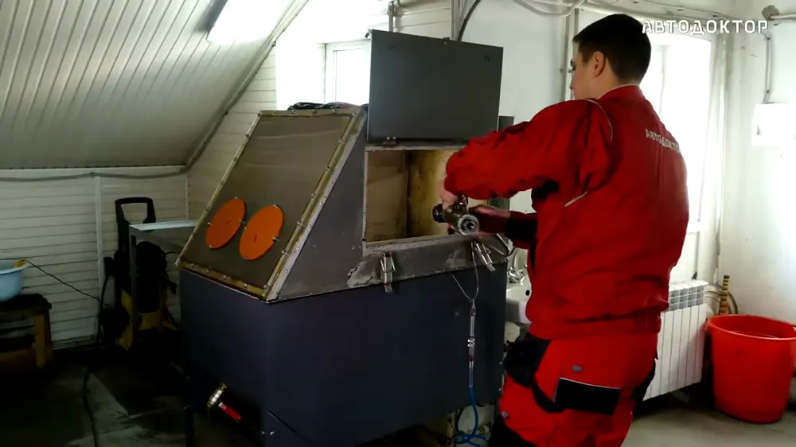
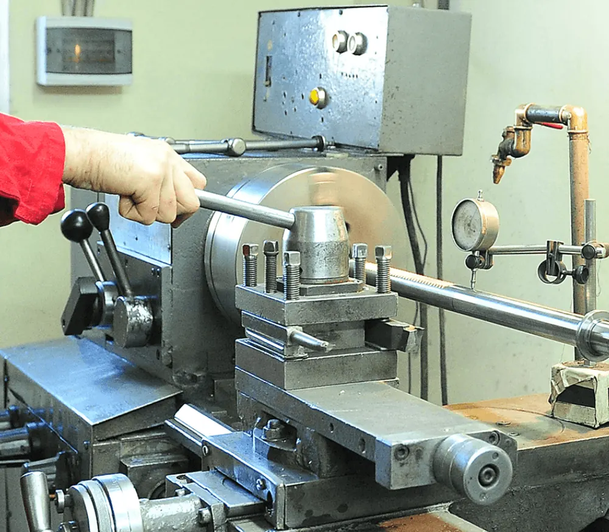
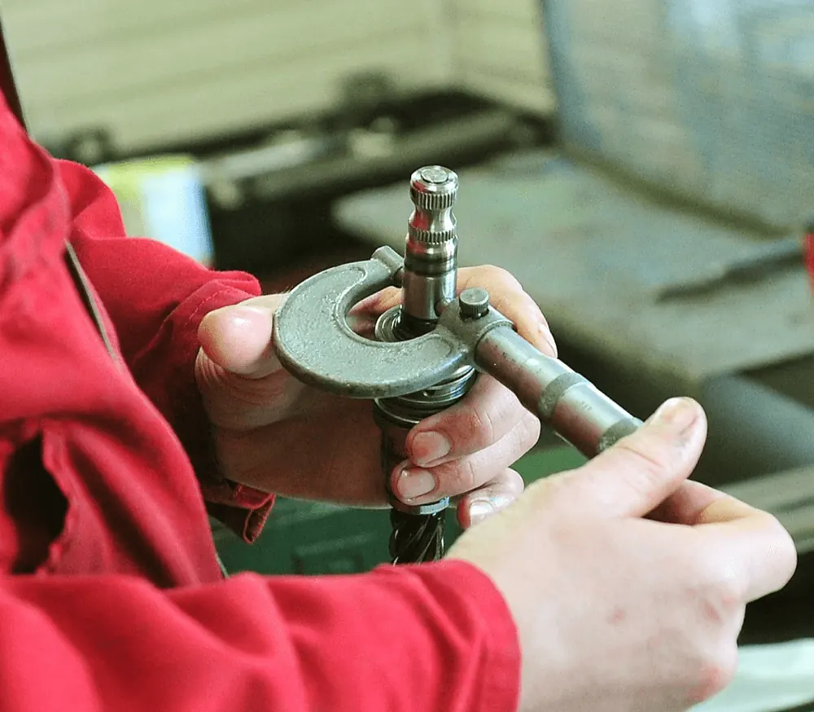
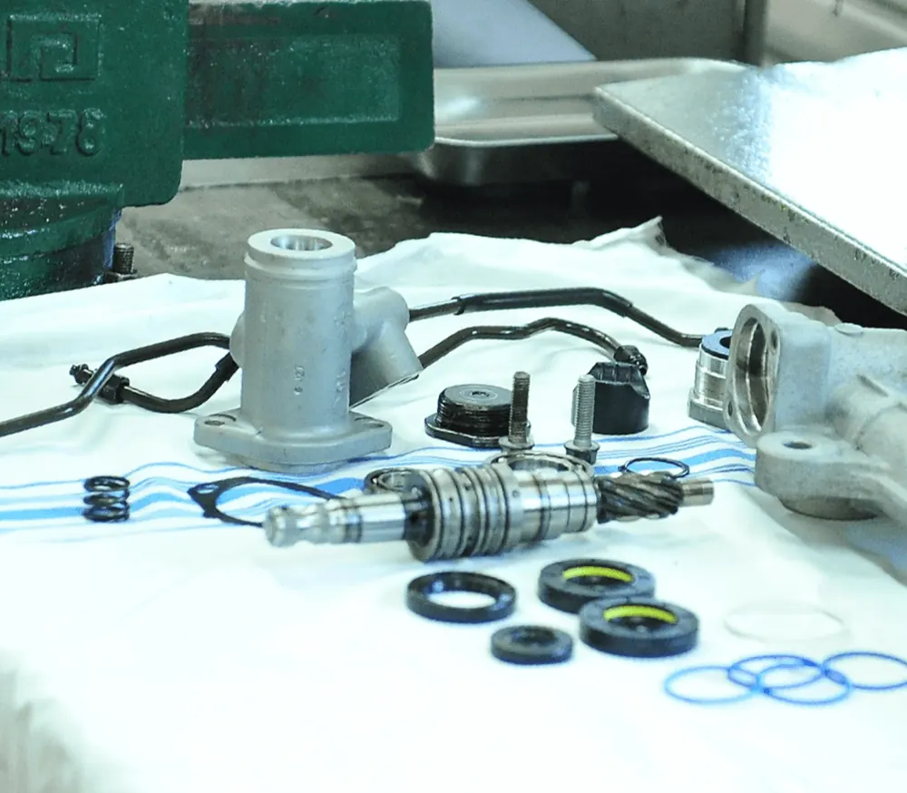
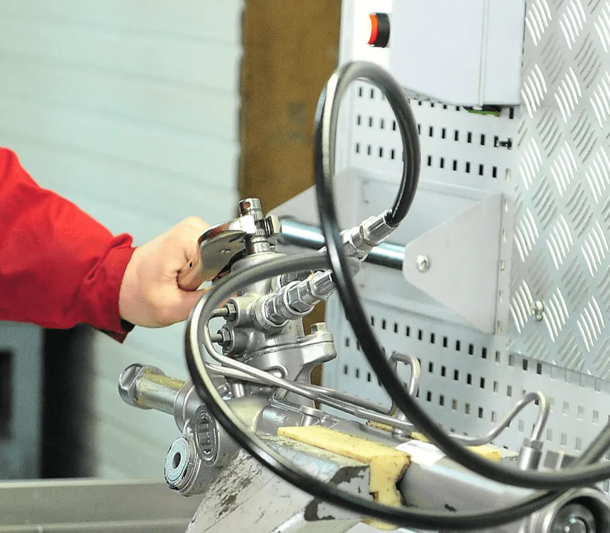
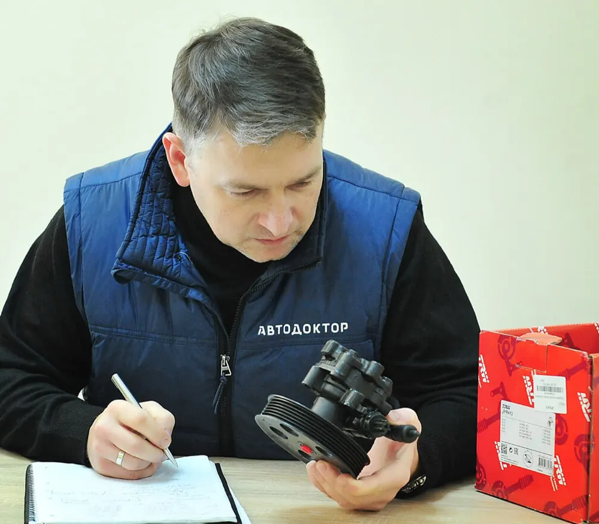
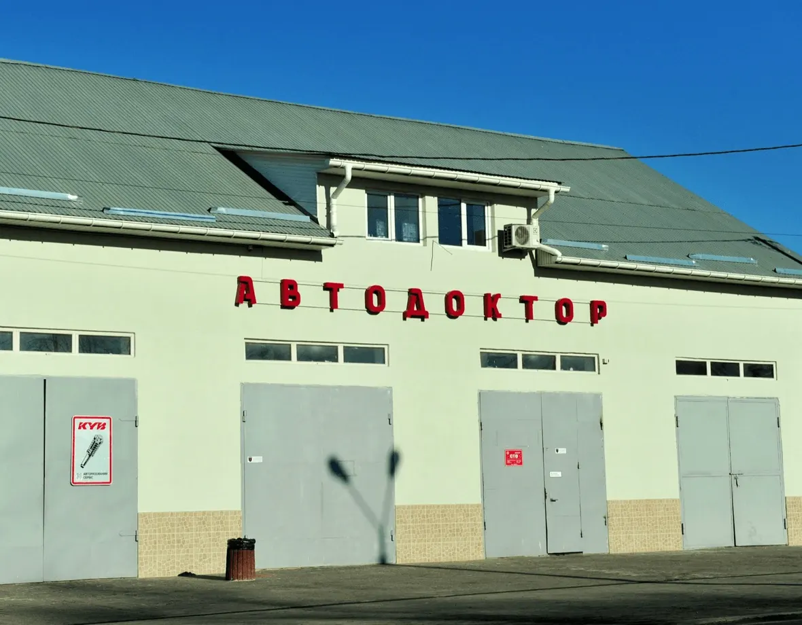
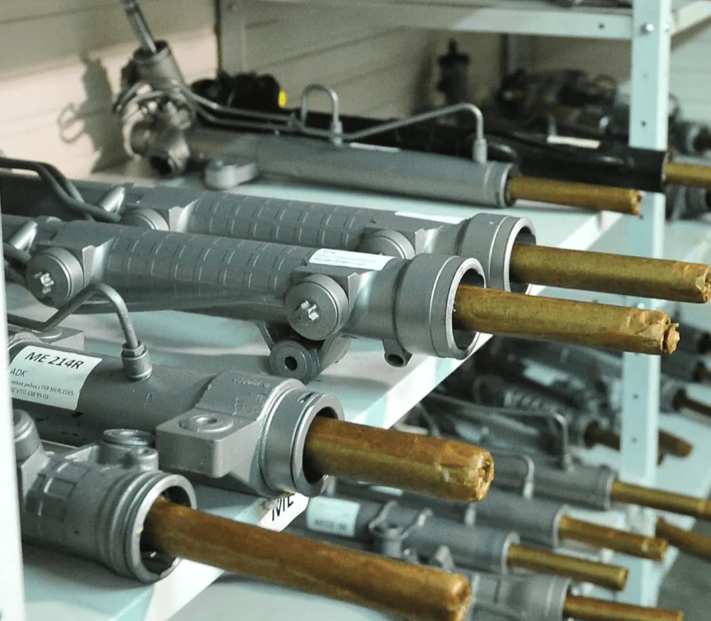

Одеса · Житомирська, 46 · власний цех
Ремонт кермових рейок за один робочий день.
Власний цех з ремонту кермового керування в Одесі. Розбираємо агрегат до деталей, відновлюємо і перевіряємо кожну рейку на стенді.
- Ремонт рейки
- від 1 500 грн*
- Гарантія
- 1 рік або 30 000 км
- Термін
- 1 робочий день
- Адреса
- Одеса, Житомирська, 46
- Графік
- Пн–Пт 8–17 · Сб 8–13
Ціна ремонту рейки на вашу модель — ще до дзвінка.
Найнижча ціна за ремонт знятої рейки у прайсі. Оберіть авто, щоб побачити свою.
Прайс по всіх моделях* Ціни з прайсу avtodoctor.com.ua. Зняття і встановлення рейки — від 1 400 грн. Точну вартість майстер називає після діагностики.
Що відчуваєте за кермом — і що це зазвичай означає.
- 2.1Стук у кермі на нерівностях, биття кермаЗнос опорних втулок і зубчастої пари штокаремонт рейки
від 1 500 грн - 2.2Туге кермо, важко повертати колесаЗнос розподільника рейки або несправний насос ГПКгідравлічна рейка
від 3 400 грн - 2.3Підтікання масла з гідросистемиЗношені сальники, розірваний пильовикгідравлічна рейка
від 3 400 грн - 2.4Гуде насос підсилювача кермаЗнос ротора, статора або пластини насосанасос ГПК
від 1 500 грн - 2.5Помилка підсилювача, кермо «клинить»Датчик обертового моменту або блок керування ЕПКкомп’ютерна діагностика
250 грн - 2.6Машину веде в бік під час рухуПорушені кути коліс, люфт у кермових тягахрозвал-сходження
ціну уточнюйте
Що всередині — і що ми з цим робимо.
- 01 Корпус
- 02 Шток із зубчастою частиною
- 03 Розподільник і черв’ячний вал
- 04 Опорні втулки
- 05 Сальники
- 06 Пильовики
- 07 Кермові тяги
- 08 Кріплення
- Повністю розбираємо агрегатДо кожної деталі: тяги, пильовики, сальники, шток.
- Піскоструїмо, чистимо, миємо й знежирюємоКорпус і деталі — до чистого металу.
- Поліруємо, за потреби шліфуємо шток і черв’ячний валВідновлюємо робочу поверхню або міняємо вал.
- Виготовляємо нові опорні втулкиВласні токарі, свій верстатний парк.
- Замінюємо підшипники, пильовики й інші компонентиКомплектуючі вже на складі — без очікування.
- Перевіряємо зібраний агрегат на стендіГерметичність і прохідність розподільника.
- Маркуємо агрегат і заносимо в журналГарантія 1 рік або 30 000 км.







Відновлена рейка коштує в рази менше за нову.
01 Якщо вашу рейку неможливо відновити — запропонуємо відновлену зі складу. Там понад 150 агрегатів.
02 Гарантія на ремонт — 1 рік або 30 000 км. Несемо й післягарантійні зобов’язання.
03 Зняття і встановлення рейки — від 1 400 грн, розвал-сходження після ремонту — на місці.
Від Lacetti до Skyline R32 і Tesla Model S.

«На Одещині не було майстерні з ремонту кермового управління — мене зацікавив цей напрямок, і ми почали навчатися цій тематиці.»
кермових рейок відновила команда
насосів підсилювача керма
відновлених агрегатів на складі
людини в колективі, без плинності кадрів
Прайс за маркою — окрема сторінка для кожної.

Відновлені рейки та запчастини — зі складу.
Якщо ремонт неможливий або вам потрібен агрегат на заміну — підберемо відновлену рейку, насос чи колонку під ваш автомобіль. Відправляємо Новою Поштою по всій Україні.
Перейти в каталогДля СТО-партнерів: ремонт за 1–2 дні та статус замовлень онлайн → партнерам
«Приехал на развал схождения по записи, сразу приняли, осмотрели, настроили за 25 минут. Также дали консультацию по некоторым моментам и указали на мелкие моменты ходовой и рулевой рейки.»
«Отличное сто, хороший коллектив, обслуживаюсь не первый раз, все вовремя и самое главное качественный ремонт!»
«Все чётко и вовремя. Делал текущую рейку и переднюю ходовую. Сервис на уровне. Рекомендую.»
Відгуки мовою оригіналу.
- Графік
- Пн–Пт: 08:00–17:00
Сб: 08:00–13:00
Нд: вихідний